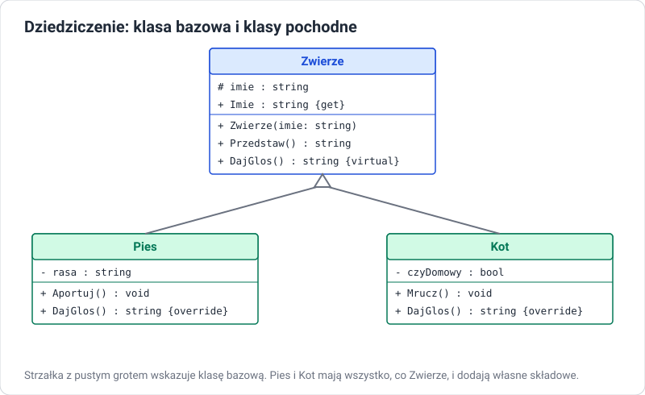

Dziedziczenie
Cel lekcji
Po tej lekcji będziesz umieć zdefiniować klasę bazową i klasy pochodne, wyjaśnić, co klasa pochodna dziedziczy, a czego nie, korzystać z modyfikatora protected i słowa base, wywoływać konstruktor klasy bazowej, blokować dziedziczenie słowem sealed, wyjaśnić rolę klasy object oraz ocenić, kiedy dziedziczenie jest właściwym rozwiązaniem.
Problem: powtarzający się kod
class Pies
{
public string Imie = "";
public int Wiek;
public string Przedstaw() => $"{Imie}, {Wiek} lat";
public void Aportuj() => Console.WriteLine($"{Imie} przynosi patyk");
}
class Kot
{
public string Imie = "";
public int Wiek;
public string Przedstaw() => $"{Imie}, {Wiek} lat";
public void Mrucz() => Console.WriteLine($"{Imie} mruczy");
}
Imie, Wiek i Przedstaw są zapisane dwa razy. Przy dziesięciu gatunkach — dziesięć razy. Zmiana formatu przedstawiania wymagałaby poprawki w każdej klasie.
Rozwiązanie: klasa bazowa
Wspólne składowe przenosimy do klasy bazowej, a klasy szczegółowe dziedziczą po niej:
// Zwierze.cs
class Zwierze
{
public string Imie { get; }
public int Wiek { get; protected set; }
public Zwierze(string imie, int wiek)
{
Imie = imie;
Wiek = wiek;
}
public string Przedstaw() => $"{Imie}, {Wiek} lat";
}
// Pies.cs
class Pies : Zwierze
{
public string Rasa { get; }
public Pies(string imie, int wiek, string rasa) : base(imie, wiek)
{
Rasa = rasa;
}
public void Aportuj() => Console.WriteLine($"{Imie} przynosi patyk");
}
// Kot.cs
class Kot : Zwierze
{
public Kot(string imie, int wiek) : base(imie, wiek) { }
public void Mrucz() => Console.WriteLine($"{Imie} mruczy");
}
// Program.cs
Pies burek = new Pies("Burek", 3, "kundel");
Console.WriteLine(burek.Przedstaw()); // metoda odziedziczona po Zwierze
burek.Aportuj(); // metoda własna klasy Pies
Kot filemon = new Kot("Filemon", 5);
filemon.Mrucz();

| Pojęcie | Inne nazwy | W przykładzie |
|---|---|---|
| klasa bazowa | nadklasa, klasa rodzica | Zwierze |
| klasa pochodna | podklasa, klasa potomna | Pies, Kot |
| dziedziczyć | rozszerzać, wywodzić się | class Pies : Zwierze |
Relacja „jest”
Dziedziczenie wyraża relację „jest rodzajem” (is-a): pies jest zwierzęciem, kot jest zwierzęciem. Dlatego obiekt klasy pochodnej można przypisać do zmiennej typu bazowego:
Zwierze z = new Pies("Burek", 3, "kundel"); // poprawne: pies jest zwierzęciem
Console.WriteLine(z.Przedstaw()); // dostępne: składowa Zwierze
// z.Aportuj(); // błąd: przez zmienną typu Zwierze nie widać metod Psa
List<Zwierze> schronisko = new List<Zwierze>
{
new Pies("Burek", 3, "kundel"),
new Kot("Filemon", 5),
new Pies("Azor", 7, "owczarek")
};
Odwrotnie nie wolno: nie każde zwierzę jest psem — Pies p = new Zwierze(...) się nie skompiluje.
Test „jest”
Zanim użyjesz dziedziczenia, powiedz zdanie „Pochodna jest rodzajem Bazowej”. „Samochód jest rodzajem pojazdu” — dobrze. „Samochód jest rodzajem silnika” — źle: samochód ma silnik. Relację „ma” (has-a) zapisujemy jako pole: class Samochod { private Silnik silnik; }. To kompozycja, i często jest lepszym wyborem niż dziedziczenie.
Co klasa pochodna dziedziczy
| Składowa klasy bazowej | W klasie pochodnej |
|---|---|
public pola, właściwości, metody |
dostępne i widoczne na zewnątrz |
protected składowe |
dostępne w kodzie klasy pochodnej, niewidoczne na zewnątrz |
private składowe |
istnieją w obiekcie, ale kod klasy pochodnej nie ma do nich dostępu |
| konstruktory | nie są dziedziczone — klasa pochodna musi mieć własne |
protected
// Program.cs
// Program.cs
Pies p = new Pies("Burek");
// p.energia = 500; // błąd: protected nie jest dostępne z zewnątrz
// Zwierze.cs
class Zwierze
{
protected int energia = 100; // widoczne dla klas pochodnych
public string Imie { get; }
public Zwierze(string imie) { Imie = imie; }
}
// Pies.cs
class Pies : Zwierze
{
public Pies(string imie) : base(imie) { }
public void Biegaj()
{
energia -= 20; // dostęp do pola protected
Console.WriteLine($"{Imie} biega, energia: {energia}");
}
}
protected używamy oszczędnie. Lepiej, żeby klasa bazowa udostępniała klasom pochodnym metody pilnujące reguł niż surowe pola.
Konstruktory w hierarchii
Przy tworzeniu obiektu klasy pochodnej najpierw wykonuje się konstruktor klasy bazowej, a potem pochodnej. Konstruktor bazowy wskazujemy przez : base(...):
// Program.cs
Kierownik k = new Kierownik("Nowak", 9000, 5);
// konstruktor Pracownik
// konstruktor Kierownik
// Pracownik.cs
class Pracownik
{
public string Nazwisko { get; }
public decimal Pensja { get; protected set; }
public Pracownik(string nazwisko, decimal pensja)
{
Nazwisko = nazwisko;
Pensja = pensja;
Console.WriteLine("konstruktor Pracownik");
}
}
// Kierownik.cs
class Kierownik : Pracownik
{
public int LiczbaPodwladnych { get; }
public Kierownik(string nazwisko, decimal pensja, int podwladni) : base(nazwisko, pensja)
{
LiczbaPodwladnych = podwladni;
Console.WriteLine("konstruktor Kierownik");
}
}
Jeśli klasa bazowa nie ma konstruktora bezparametrowego, klasa pochodna musi wywołać base(...) z argumentami — inaczej błąd kompilacji CS7036.
base — dostęp do wersji z klasy bazowej
Słowo base pozwala wywołać metodę klasy bazowej z wnętrza klasy pochodnej — np. żeby rozszerzyć jej działanie zamiast pisać od nowa:
class Zwierze
{
public string Imie { get; }
public Zwierze(string imie) { Imie = imie; }
public virtual string Opis() => $"Zwierzę: {Imie}";
}
class Pies : Zwierze
{
public string Rasa { get; }
public Pies(string imie, string rasa) : base(imie) { Rasa = rasa; }
public override string Opis() => base.Opis() + $", rasa: {Rasa}";
}
Słowa virtual i override omawiamy dokładnie w lekcji o polimorfizmie.
Hierarchia wielopoziomowa
Klasa pochodna może być bazową dla kolejnej:
class Pojazd { }
class PojazdSilnikowy : Pojazd { }
class Samochod : PojazdSilnikowy { }
class SamochodElektryczny : Samochod { }
SamochodElektryczny ma wszystko, co trzy klasy nad nim. Hierarchie głębsze niż 3–4 poziomy są trudne w utrzymaniu — zmiana na górze wpływa na wszystkie klasy poniżej.
Jedna klasa bazowa
W C# klasa może dziedziczyć tylko po jednej klasie bazowej (dziedziczenie jednokrotne). Zapis class C : A, B dla dwóch klas jest błędem. Gdy obiekt ma mieć kilka zestawów zachowań, używamy interfejsów — klasa może implementować ich dowolnie wiele. To odpowiednik dziedziczenia wielokrotnego znanego z C++.
sealed — zakaz dziedziczenia
sealed class Haslo
{
// nikt nie może utworzyć klasy pochodnej i zmienić zachowania
}
// class MojeHaslo : Haslo { } // błąd CS0509
Klasa string w .NET jest sealed.
Klasa object — wspólny przodek
Każda klasa w C#, nawet bez dwukropka, dziedziczy po klasie object (System.Object). Dlatego każdy obiekt ma metody:
| Metoda | Działanie domyślne |
|---|---|
ToString() |
zwraca nazwę typu |
Equals(object) |
sprawdza, czy to ten sam obiekt (dla klas) |
GetHashCode() |
liczba używana przez słowniki i zbiory |
GetType() |
informacja o rzeczywistym typie obiektu |
Nadpisując ToString() słowem override, zastępujemy wersję odziedziczoną po object.
Kiedy dziedziczyć, a kiedy nie
| Dziedzicz, gdy… | Nie dziedzicz, gdy… |
|---|---|
| zachodzi relacja „jest rodzajem” | zachodzi relacja „ma” — użyj pola (kompozycji) |
| klasy pochodne naprawdę współdzielą dane i zachowanie | chcesz tylko skorzystać z kilku metod innej klasy |
| obiekt pochodny może zastąpić bazowy w każdym miejscu programu | klasa pochodna musiałaby „wyłączać” część zachowania bazowej |
Klasyczny przykład błędu: class Kwadrat : Prostokat. Kwadrat jest prostokątem w matematyce, ale jeśli Prostokat pozwala zmieniać szerokość niezależnie od wysokości, Kwadrat musiałby to łamać — i kod działający dla prostokątów przestałby działać dla kwadratów.
Zadania
Zadanie 1: Pojazdy
Zaprojektuj (diagram UML) i napisz klasę bazową Pojazd (marka, rok produkcji, przebieg z protected set, metoda Jedz(int km) zwiększająca przebieg) oraz klasy pochodne Samochod (liczba drzwi) i Rower (liczba przerzutek). Każda klasa ma konstruktor wywołujący konstruktor bazowy i nadpisany ToString().
Zadanie 2: Kolejność konstruktorów
Dodaj do konstruktorów klas z zadania 1 wypisywanie komunikatu i dodaj trzeci poziom: SamochodElektryczny : Samochod (pojemność baterii). Utwórz obiekt najniższej klasy i zapisz kolejność komunikatów. Wyjaśnij ją.
Zadanie 3: Pracownicy
Klasa Pracownik (imię, nazwisko, pensja podstawowa, metoda Wyplata() zwracająca pensję) i pochodne: Kierownik (dodatek funkcyjny), Handlowiec (prowizja 5% od sprzedaży, metoda DodajSprzedaz(decimal kwota)). Na razie Wyplata() liczy tylko pensję podstawową — w lekcji o polimorfizmie każda klasa policzy ją po swojemu. Utwórz listę List<Pracownik> z obiektami wszystkich klas i wypisz ich nazwiska.
Zadanie 4: Jest czy ma?
Dla każdej pary zdecyduj: dziedziczenie czy pole (kompozycja)? Uzasadnij. Uczeń — Osoba; Samochód — Koło; Prostokąt — Figura; Biblioteka — Książka; Admin — Użytkownik; Telefon — Bateria.
Zadanie 5: Znajdź błędy
class Osoba
{
private string imie;
public Osoba(string imie) { this.imie = imie; }
}
class Uczen : Osoba
{
public string Klasa;
public Uczen(string klasa) { Klasa = klasa; }
public string Opis() => $"{imie} z klasy {Klasa}";
}
Wskaż oba błędy kompilacji, wyjaśnij przyczyny i popraw kod.